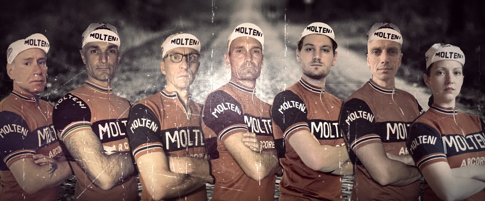
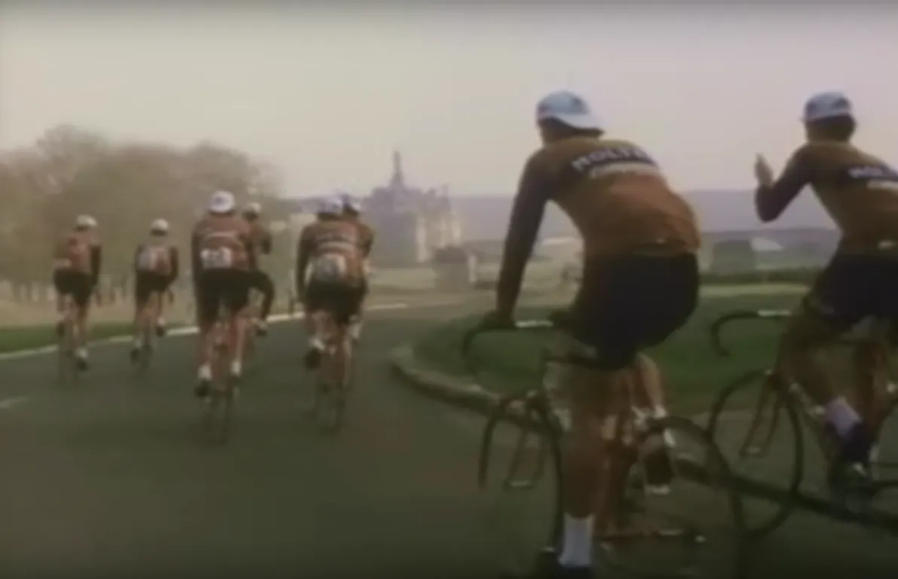

Molteni til Helvede i Nord

ASO inviterer det danske retrocykelhold Squadra Molteni til brostensklassikeren Paris-Roubaix – også kendt som “Helvede i Nord”.
ASOs løbsdirektør Christian Prudhomme har inviteret Squadra Molteni til start ved Paris-Roubaix Challenge 2018. Løbet, der er på 177 km – heraf 55 km på brosten, køres dagen før de professionelles Paris-Roubaix.
– Det har sikkert været i forbindelse med den danske charmeoffensiv overfor Tour de France direktøren Christian Prudhomme i denne uge. Jeg og Eigil Leegaard lå og kørte intervaller. En sort ministerbil kører op på siden af os. Sideruden ruller ned, og på bagsædet sidder Lars Løkke Rasmussen og Christian Prudhomme. Prudhomme siger et eller andet med Molteni og Merckx på halvdårlig engelsk til os. Vi hilste pænt, men havde ikke tid til at snakke. Vi skulle køre vores 20 x Munkebjerg-intervaller færdige, fortæller kaptajn Niels Bjørnsteen.
Spritnye træningsplaner
Mødet har åbenbart gjort indtryk på Christian Prudhomme. For da kaptajn Bjørnsteen kommer hjem og åbner postkassen, ligger der en invitation til Paris-Roubaix Challenge til holdet.
– Løbet køres lørdag den 7. april – og dér havde vi heldigvis et hul i vores løbskalender. Men det betyder, at vi skal have ændret en del i vores vintertræningsplan, siger løjtnant Kasper Sørensen, der ellers lige havde kørt holdets vintertræningplan gennem spritduplikatoren, klar til at blive sendt ud til holdets ryttere.
Dieselmotorer på hårdt arbejde
Squadra Molteni er tilmeldt med 7 ryttere: Jens Langergaard, Grane Maaløe, Eigil Leegaard, Niels Bjørnsteen, Kasper Sørensen, Kristian Blume og Maria Winther. Et på papiret stærkt hold. Og endnu stærkere i virkeligheden!


– Vi har nogle store stærke “dieselmotorer” i Jens, Eigil, Kasper, Kristian og Maria. De bliver selvfølgelig sat på hårdt arbejde de første 150 km. Og så må vi se, om jeg kan lave et fornuftigt lead-out for Supersprinter Grane inden vi rammer velodromen i Roubaix, siger Niels Bjørnsteen.
Vindsvin, belgisk øl og Bindeballebjæsk
Det er ikke kun de træningsmæssige og taktiske forberedelser der er begyndt hos Squadra Molteni. Også de kostmæssige forberedelser er kommet på dagsordnen.
– Jeg er ved at lave kostplaner for holdet: En stram diæt bestående af nordfransk vildsvin i rødvinssovs, ekstra mørk belgisk øl og Bindeballebjæsk, afslører holdlæge Finn Birk
1976 var sidste år Molteniholdet stillede til start ved Paris-Roubaix. Det var samme år, hvor Jørgen Leth filmede “En forårsdag i helvede”.
